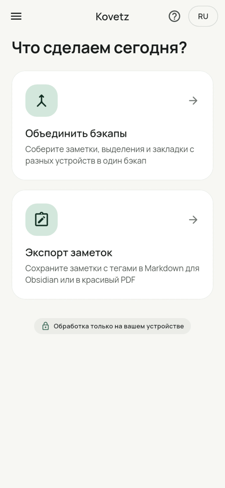
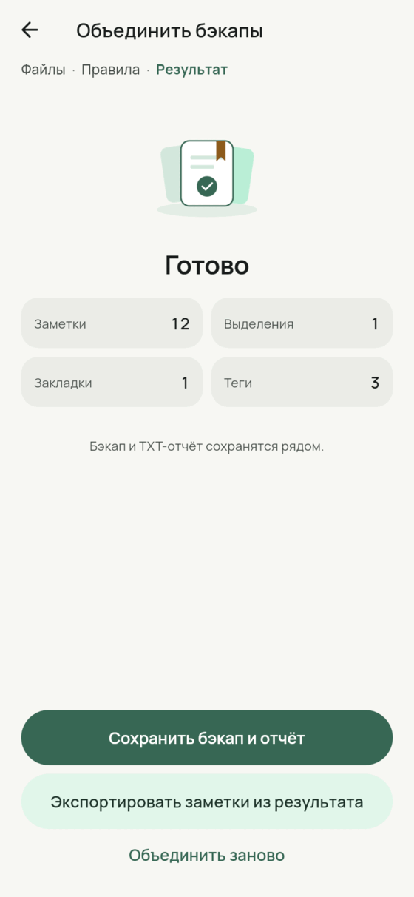
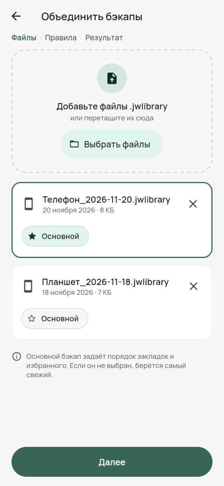
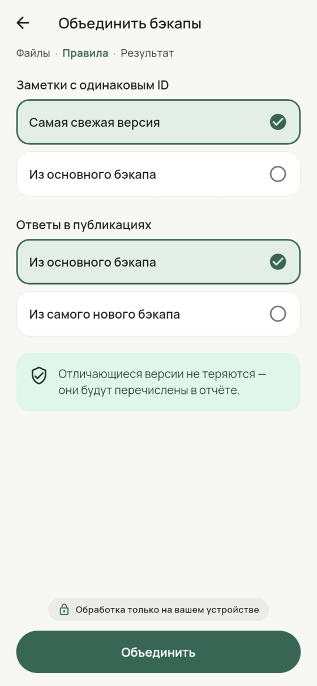
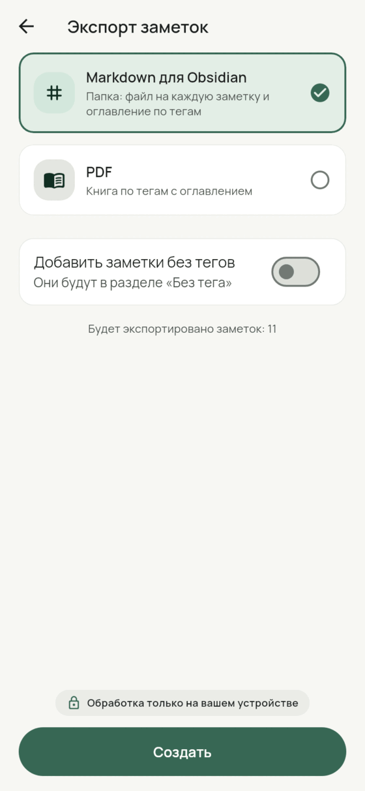
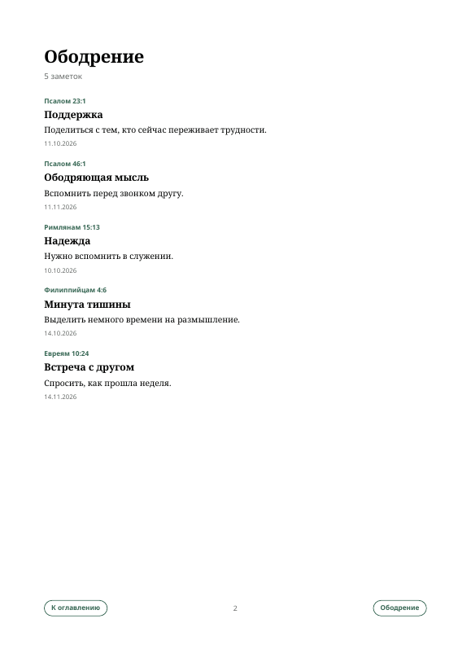

Исходные копии в сохранности
Kovetz сохраняет результат отдельным файлом и сообщает в отчёте, что не удалось перенести. Подойдут даже копии 2019 года.
Телефон, планшет, компьютер — на каждом устройстве у вас свои находки. Kovetz собирает резервные копии (бэкапы) JW Library в одну, которую можно восстановить в приложении.


Вы читаете, исследуете и записываете мысли. Со временем на телефоне, планшете и компьютере накапливаются разные заметки. При восстановлении копии JW Library заменяет записи на устройстве данными из этой копии.
Добавьте резервные копии с разных устройств, даже если вы сделали их в разные годы. Kovetz соберёт заметки, выделения, закладки, избранное и ответы в один файл .jwlibrary.
Kovetz сохраняет результат отдельным файлом и сообщает в отчёте, что не удалось перенести. Подойдут даже копии 2019 года.
Сохраните заметки в PDF-книгу с оглавлением по тегам и номерами страниц. Читайте её на экране или распечатайте.
Получите отдельный Markdown-файл для каждой заметки, оглавления по тегам и готовые ссылки между записями.
Kovetz создан для тех, кто изучает Библию с помощью приложения JW Library: Свидетелей Иеговы, интересующихся людей и всех, кто хранит заметки, выделения и закладки на нескольких устройствах. Готовите ли вы части программы, ведёте записи для служения или копите находки из личного изучения, Kovetz собирает их в одну копию и сохраняет в удобном виде: в PDF-книге или в Obsidian.
Kovetz — независимая программа, не связанная с JW Library и её разработчиками.
Нажмите «Выбрать файлы» и добавьте копии с телефона, планшета и компьютера.

Проверьте правила объединения. Kovetz прочитает копии и соберёт их в один файл.

Восстановите общий файл в JW Library или откройте «Экспорт заметок» и выберите PDF или Obsidian.

Оглавление по тегам помогает найти нужную страницу. Внутри тега записи можно упорядочить по источнику или дате. В PDF корректно отображаются кириллица и армянский текст.


Каждая заметка хранится в своём Markdown-файле с источником в свойствах. Для тегов создаются страницы-оглавления, а общий указатель помогает ориентироваться в записях.
Есть и другие инструменты для резервных копий JW Library. Вот краткое сравнение по общедоступным описаниям проектов.
| Программа | Платформы | Что делает |
|---|---|---|
| Kovetz | Android, Windows, Linux | Объединяет любое число копий, отчёт о различиях, экспорт заметок в PDF и Obsidian, с графическим окном |
| JWLMerge | Windows | Объединяет копии; по словам автора, проект не поддерживается с 2023 года и несовместим с новой схемой базы |
| Library Merger | iPhone, iPad, Mac | Объединяет две копии, конфликты решаются вручную |
| go-jwlm | Командная строка | Объединяет две копии, нужен терминал |
| JWLManager | Linux, macOS, Windows | Просмотр и правка содержимого копий |
Если вы пользуетесь Android или Windows и хотите получить ещё и заметки в PDF или Obsidian, Kovetz соберёт всё в одной программе.
Все копии и заметки обрабатываются на вашем устройстве. Подключение к GitHub нужно, только если вы хотите проверить обновления. Аккаунт для работы с программой не нужен.
В руководстве каждый шаг описан простым языком, а на больших снимках экрана отмечено, куда нажать. Руководство можно читать на сайте или распечатать.
Открыть руководствоЯ хочу опубликовать Kovetz в Google Play, и для этого нужна группа тестировщиков на Android. Если у вас есть Android-телефон или планшет, вы пользуетесь JW Library и готовы пару недель пробовать программу, напишите мне на GitHub: создайте обращение (Issue) и коротко расскажите о своём устройстве. Я отвечу и объясню, что делать дальше. Отзывы и найденные ошибки тоже можно оставлять там.
Kovetz делает один человек в свободное время. Программа бесплатная и без рекламы. Если она вам помогла, можно по желанию поддержать разработку или угостить меня кофе.
Сделайте резервную копию в JW Library на каждом устройстве, перенесите файлы .jwlibrary на одно устройство, добавьте их в Kovetz и нажмите «Объединить». Готовую копию восстановите в JW Library.
Сделайте резервную копию на старом телефоне и, если нужно, объедините её с копиями других устройств в Kovetz. Затем восстановите получившийся файл на новом телефоне.
По справке на jw.org, заметки, теги, выделения и закладки между устройствами автоматически не синхронизируются. Резервную копию можно восстановить на другом устройстве, но она заменит его данные. Объединить копии помогает Kovetz.
Восстановление в JW Library заменяет данные на устройстве. Если заметки сохранились в старых копиях, соберите их в одну с помощью Kovetz и восстановите объединённую копию.
Он нужен для скачивания программы и проверки обновлений по желанию. Объединение и экспорт работают без интернета.
Kovetz сохраняет результат отдельным файлом, оставляя исходные копии без изменений. Перед восстановлением всё равно сделайте свежую копию устройства.
В объединённую копию попадёт более свежая версия, а вторая сохранится в отчёте.
Да, если удалённая заметка осталась в одной из копий, которые вы добавили для объединения.
Подходят файлы .jwlibrary с разных устройств, в том числе копии, сделанные в разные годы.
Чтобы вернуть заметки в JW Library, восстановите объединённую копию .jwlibrary. Экспорт в PDF и Obsidian предназначен для чтения и поиска.
Программа бесплатная. Исходный код доступен по лицензии MIT.
Kovetz — независимая программа, которая не связана с JW Library и её разработчиками.
Да. Для Android есть установочный файл APK (arm64), он подходит почти всем современным телефонам и планшетам. Также есть версии для Windows 10 и 11 и для Linux.
Да, это можно использовать как альтернативу. По словам автора JWLMerge, проект не поддерживается с 2023 года и не рассчитан на новую схему базы JW Library. Kovetz работает с копиями старых и новых версий и умеет, кроме объединения, экспортировать заметки.
Для всех, кто пользуется JW Library: Свидетелей Иеговы и интересующихся людей, у которых заметки хранятся на нескольких устройствах.
«Ковец» (קוֹבֶץ) на иврите означает «сборник», «собрание», а также «файл». Слово происходит от корня «собирать». Именно это программа и делает: собирает заметки с разных устройств в одну копию.